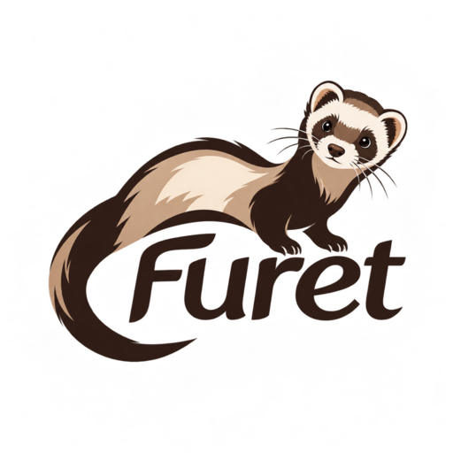

A ferret burrows into a page and flushes out what you need. Pick your engine with one flag: fast and tiny, or a real browser for the hard sites. Every command prints one JSON line.
The same JSON envelope regardless of engine, so a script parses the output identically whether it ran the fast custom engine or a real browser. Flip --light / --heavy and nothing else changes.
A from-scratch engine: native HTTP, a hand-written HTML tokenizer and DOM, CSS-lite selectors, and a real JavaScript runtime embedded via C FFI (QuickJS). document.querySelectorAll(...).map(...) runs over the parsed page — no browser, no Node, no Python. Fast and tiny; the right tool for pages that aren't actively defended.
Drives a real Chrome or Edge over the DevTools Protocol through a pure-MFL WebSocket client. Launch one, or attach to a browser you already run for a genuine fingerprint and TLS. Handles JS-rendered sites the light engine can't. Best-effort dedup and an opt-in --screenshot proof.
The light engine embeds a JavaScript runtime instead of a browser, so it scrapes JS-capable pages at a fraction of the memory and disk of browser-based tools. Measured with /usr/bin/time, extracting 200 structured records.
| Tool | Install / binary | RAM (typical) | Extra runtime | Runs page JS |
|---|---|---|---|---|
| furet --light | 7.3 MB static (1.3 MB dyn) | ~9 MB | none | yes (QuickJS) |
| obscura | ~70 MB | ~30 MB | none | yes (V8) |
| Headless Chrome | ~300 MB+ | ~200 MB+ / tab | none | yes |
| Puppeteer / Playwright | Chromium + node_modules | ~200 MB+ | Node.js | yes |
| Scrapy / BeautifulSoup | Python packages | ~30–60 MB | Python | no* |
*Pure-Python parsers don't run page JavaScript; JS-rendered sites need Selenium/Playwright + a browser. Other tools' numbers are typical/published figures, not measured here (obscura's are its own published claims). RAM scales with page size — a ~900 KB page peaks near 100 MB while it works, then exits. The heavy engine drives a real browser, so its footprint there is a browser's.
Needs machin, a C compiler, and python3. QuickJS is vendored and compiled on first build.
# build git clone https://github.com/javimosch/furet && cd furet ./build.sh # -> ./furet (static QuickJS compiled from source)
# light: run selector JavaScript over a parsed page
furet extract "https://example.com/" \
--js "[...document.querySelectorAll('a')].map(a => ({text:a.textContent, href:a.getAttribute('href')}))"
# heavy: scroll a JS-rendered list in a real browser
microsoft-edge --headless=new --remote-debugging-port=9222 \
--remote-allow-origins='*' --user-data-dir=/tmp/fe about:blank &
FURET_CDP_HTTP=http://127.0.0.1:9222 \
furet feed "<url>" --heavy -s "<item-selector>" --limit 120 --screenshot out.png
Every command prints one JSON line: {ok, engine, cmd, url, status, data, error}. Exit 0 ok · 1 command error · 2 usage.
fetch — status, byte count, content-type, titletext — visible text, whole page or per selectorlinks — every anchor: href, absolute url, textattr — an attribute's value for each matchextract — run JS over the real DOM, emit {count, items}feed — heavy: scroll a JS-rendered list and collect items matching a selectoreval — run JS with a page object (light) or in a real browser (heavy)guide — machine-readable capability catalog (JSON)robots.txt, don't collect personal data unlawfully (the GDPR can apply to public data), rate-limit, and prefer official APIs. furet ships no built-in target — you supply every URL and selector. Provided “as is”, without warranty; no liability for use. See the MIT License.